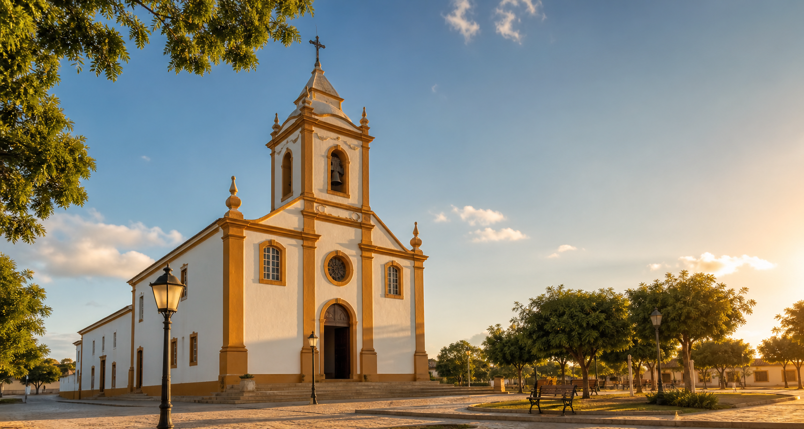

Missas
Domingo8h
Quinta-feira19:30h
Datas especiaisConforme aviso
Uma comunidade a serviço da fé
Seja bem-vindo ao site da nossa paróquia. Aqui você encontra informações, avisos, horários e conteúdos para fortalecer sua caminhada de fé.
Horários
Consulte os horários fixos e procure a secretaria paroquial para agendamentos, intenções e orientações pastorais.
Agenda paroquial
Uma agenda viva para missas, novenas, terços, encontros, formações, sacramentos e festas da comunidade.
Celebrações na igreja matriz, com acolhida das famílias e intenções da comunidade.
Momento de oração, escuta da Palavra e fortalecimento da caminhada de fé.
Encontros de pastorais, grupos de jovens, catequese, liturgia e serviços da paróquia.
Calendário sacramental divulgado pela secretaria e pelos coordenadores da catequese.
Liturgia do Dia
Evangelho do dia: uma breve reflexão para começar o dia com Deus, acolher a Palavra e levar ao cotidiano um gesto concreto de amor.
Intenção de oração: pelas famílias da paróquia, pelos enfermos e por todos que buscam paz e esperança.
Que a resposta do salmo seja hoje uma oração simples, confiante e perseverante.
Conheca o testemunho dos santos e deixe que a vida deles ilumine sua caminhada.
Acompanhe as celebrações pelos canais digitais da paróquia quando houver transmissão.
Pedidos de oração
A paróquia quer rezar com você. Informe se a intenção pode ser lembrada publicamente ou se deve permanecer privada.
Pastorais e movimentos
Cada pastoral é um jeito concreto de colocar dons a serviço da Igreja, da missão e da comunidade.
Forma crianças, jovens e adultos para os sacramentos e para a vida cristã.
Encontros, espiritualidade, amizade e missão para a juventude da paróquia.
Comunica avisos, celebra a memória da comunidade e evangeliza nas redes sociais.
Acompanha casais, famílias e preparação para a vida matrimonial.
Homens reunidos em oração, fraternidade e testemunho mariano.
Organiza celebrações, leitores, salmistas e ministros extraordinários da Eucaristia.
Catequese
Um espaço para avisos aos pais, documentos necessários, calendário de encontros, Primeira Eucaristia e Crisma.
Procure a secretaria paroquial no período divulgado nos avisos da semana.
Certidão de nascimento, lembrança do Batismo e dados dos responsáveis.
Horários organizados por etapa, idade e disponibilidade dos catequistas.
Encontros, retiros, reuniões com pais e datas celebrativas da catequese.
Dízimo e doações
O dízimo ajuda nossa paróquia a evangelizar, cuidar da igreja, realizar ações sociais e manter viva a missão da comunidade.
Evangelização, manutenção, celebrações, formações, pastorais e caridade.
Um resumo simples pode ser publicado periodicamente para toda a comunidade.
Galeria
Fotos de festas, procissões, crismas, Primeira Eucaristia, formações e ações sociais.

História da paróquia
A Paróquia São João Batista guarda a memória das famílias, das celebrações, dos padres que passaram pela comunidade e dos momentos marcantes que formaram sua identidade.
São João Batista, testemunha da luz e convite constante a preparar os caminhos do Senhor.
Espaço para listar as capelas, comunidades rurais e setores pertencentes à paróquia.
Área do padre
Que este site seja uma ponte entre a paróquia e cada família da nossa comunidade. Que São João Batista interceda por todos e nos ajude a viver a missão com alegria.
Padre: Nome do pároco
Secretaria: Atendimento de segunda a sexta, em horario comercial.
Noticias e avisos
Convites, comunicados importantes, campanhas, formações e eventos da comunidade.
Confira os leitores, salmistas, ministros e equipes responsáveis pelas próximas missas.
Encontro aberto para agentes de pastoral, catequistas, jovens e famílias.
Inscrições abertas para quem deseja servir nas pastorais e ações sociais.
Contato
Tire dúvidas sobre horários, documentos, inscrições, agendamentos, intenções de missa e pedidos de oração.
WhatsApp: (89) 99999-9999
E-mail: contato@paroquiasaojoaobatista.org.br
Redes sociais: Instagram, YouTube e Facebook da paróquia